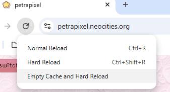
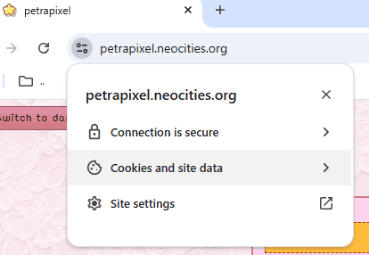
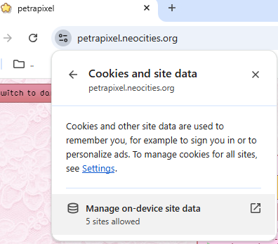
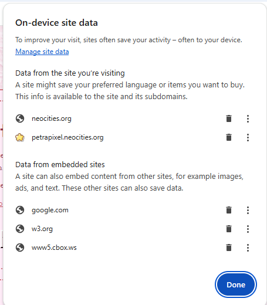
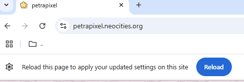
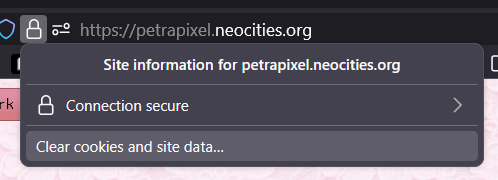
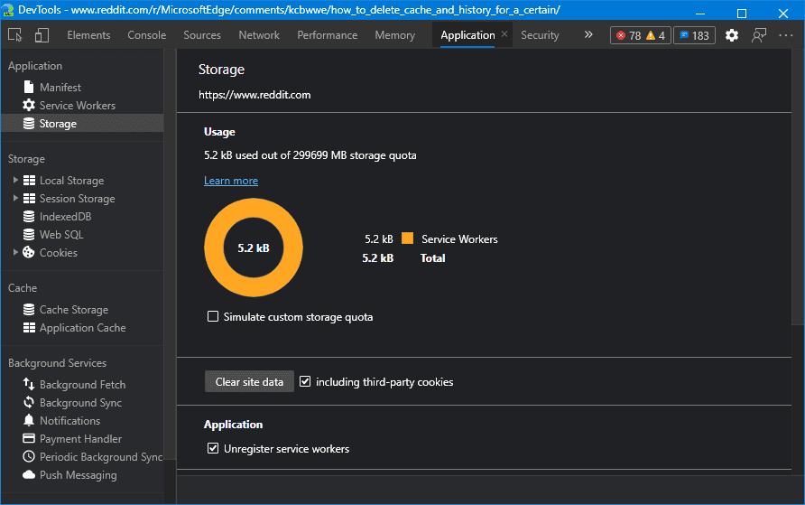

Common Questions
I sometimes try to help out over at the /r/Neocities subreddit, and I've noticed that the same questions keep coming up.
How do I build a layout like this...?
Firstly, don't use tables and floats, like some people want to tell you; it's what web developers did decades ago. We don't have to torture ourselves like that anymore. It's difficult to do, and not very accessible since the elements are not semantic. (This means that screen readers (and search engines) don't know what's what.)
Use CSS grid rules. It's a great and easy solution for modern layouts, and it's very simple to make them responsive (by changing the grid-template for smaller screens).
Here's what it could look like: (This example uses semantic elements to make the site more accessible.)
.container {
display: grid;
grid-template:
"header header" /* row 1 */
"sidebar main" /* row 2 */
"footer footer" /* row 3 */
/ 1fr 2fr; /* column widths (1fr = one fraction) */
grid-gap: 10px; /* (optional) space between areas */
}
/* assign your elements to the areas you defined in the grid-template rule: */
header { grid-area: header; }
aside { grid-area: sidebar; }
main { grid-area: main; }
footer { grid-area: footer; }
Make sure not to use quotation marks (") when using the grid-area rules. It won't work.Here is a working example of a grid layout:
Very simple layouts can also easily be made using flexbox. I highly recommend learning how to use flexbox because it makes a ton of things easier, it's probably my favorite CSS rule.
What do I do so I don't have to change my layout in all HTML files for every change?
There's lots of things you could do. Here are 3 popular options:
- Load your pages as iframes. Not recommended (though prevalent on Neocities), more info see here.
- Load everything that stays the same on every page per JavaScript. This is what I recommend for beginners. I have a tutorial and ready-to-paste code on my layout base code page. Note: Rarely - but sometimes, users have Javascript completely deactivated. Those users won't be able to browse your site, so make sure to include a noscript tag on every page.
- Use a static site generator. This has the best result, but it's much more difficult than the JavaScript solution mentioned above, so you should already be comfortable with coding. There are many static site generators to choose from, for example:
- 11ty (Eleventy). I highly recommend 11ty because it is very simple to use. I have a tutorial here!
- Jekyll (requires Ruby). I don't recommend this honestly, but if you're interested in using Jekyll I recommend lostletters' tutorial.
- Spike
Why does my script/widget not work? (Neocities)
Are you trying to use an external script (= a script that isn't hosted on your own website)? Unfortunately, if you have a free website on Neocities created after ~2022 you are not allowed to use external scripts, such as guestbooks, shoutboxes, status/mood widgets, and even hit counters unless they are iFrames:
iFrames, and any widgets that use them, do work. For guestbooks I recommend using smartgb (which is what I use for my guestbook iframe) because it is very customizable and looks good in an iframe. For a chatbox you can use cbox, because it works via an iframe.
I have a list of commonly-used widgets (that work for free accounts) here.
I have also created some other iFrame widgets you can use with a free account, e.g. status.cafe and last.fm. Check them out here.
I can't see any changes I'm making on my website (Or: "How to empty your cache")
If your website doesn't update after you've made changes, it's probably because of cache.
Cache is the data about a website that your browser saves to reduce loading time the next time you open a website. It's generally a good thing, but can get annoying when editing a website, because your browser will sometimes load an outdated version of your website. The same will happen to your website's visitors that visited it before. New visitors will always see the newest version, as they do not have your site cached yet.
You can force your browser to load the current version, and therefore fix this problem and see your changes, by clearing your browser's cache. However, you don't need to clear your entire browser's cache (that would log you out everywhere, super annoying), only the cache for your website specifically.
Please note, if your website is a subdomain of your hoster (e.g. mywebsite.neocities.org), you'll be logged out of the hoster (e.g. Neocities) when you clear your cache!
How to empty your cache in Chrome
With your browser's development tools (F12) open, press and hold the refresh button, then click "Empty Cache and Hard Reload".
Alternatively:
Click on the settings icon to the left of the address bar and click "Cookies and site data".
Then click "Manage on-device site data".
In the pop-up that opens, click the trashbin icon next to your website's URL, then click "Done".
Now reload the page.
How to empty your cache in Firefox
Open your website, and on the left side of the address bar click the lock icon, then click "Clear cookies and site data...", and confirm.
How to empty your cache in Edge
Open your browser's development tools (F12), navigate to the "Application" tab (it has an icon that looks like a website). There, on the left select "Storage". Now click "Clear site data".
How to empty your cache in Safari
I don't have Safari so I couldn't try this myself, but this guide says this:
- Open the browser settings
- Go to the "Privacy" tab
- Click "Manage Website Data..."
- Select your own website and click "Remove All"
Clearing your own cache will make your website look good for you, but visitors who have visited your website before might have an old version of the CSS/JavaScript cached too, and you can't just tell them to clear their cache. Therefore, it's better to prevent the browser from caching your CSS and JavaScript in the first place. Read my Cachebusting guide to learn how.
My website doesn't show the mobile version on mobile
You're probably missing this line in your HTML head:
<meta name="viewport" content="width=device-width, initial-scale=1.0" />(Add it anywhere between <head> and </head>)
I spend hours of my free time writing pages like these that I publish for free. If you'd like to say thanks, please share this tutorial with others and/or buy me a coffee!

If you have questions about this page feel free to contact me via my guestbook or my neocities profile. I promise I don't bite!